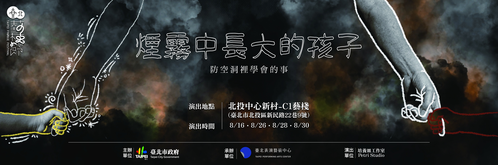

Initiate Release Protocol
啟動最高權限解密

最終，我們得到釋放
演職人員名單
編⠀⠀⠀劇
林珈儀
導⠀⠀⠀演
林珈儀
協力編劇
李柏翰
執行製作
呂穎薰
舞台監督
陳雅均
行政經理
林心惟
科技互動設計
廖冠皓
實體互動設計
林珈儀、李柏翰
燈光設計
林孝丞
燈光執行
林書丞
音效執行
陳雅均
妝造設計
葉相吟
文宣設計
Anjan
行銷宣傳
林心惟
演⠀⠀⠀員
王韋鈞、吳佩錡、呂穎薰
徐瑞宏、曾語潔、蕭靜瑩
（依姓氏筆劃排序）
互動引導演員
李秉哲、葉相吟、楊傑
特別感謝名單
台北市政府、台北表演藝術中心、台北藝穗節
林彥良先生協助道具製作